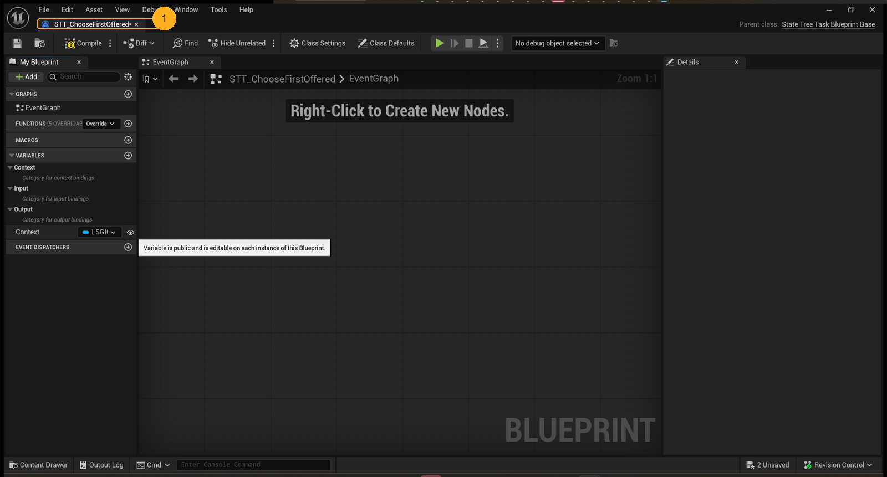
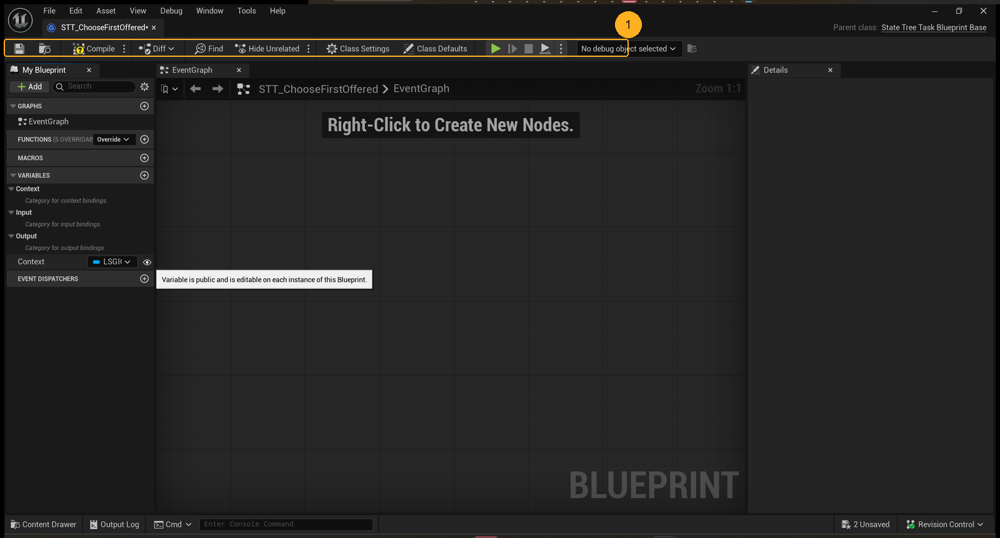
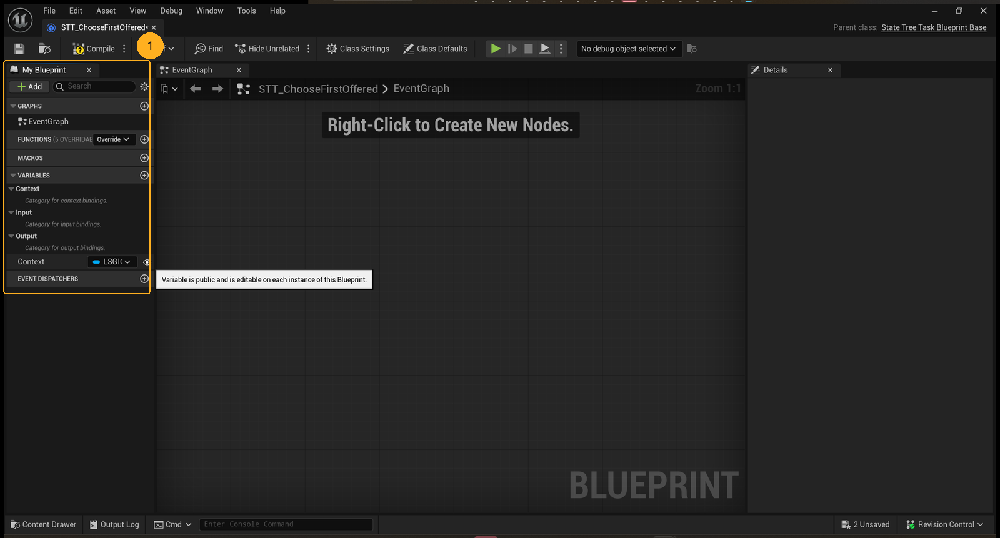
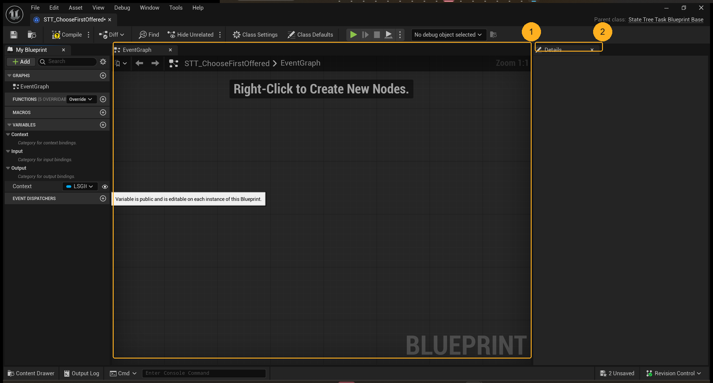

This is the asset you had open when this lesson was captured: STT_ChooseFirstOffered, a Blueprint, in the Blueprint editor. Same rule as lesson 1, one level deeper: everything below is visible on your screen or is a property of how Blueprints work. What this particular task *means* for the battle loop is the next lesson, and it belongs to the agent that owns LSGI's Unreal knowledge, not to a screenshot.

Two lines on this screen answer "what am I looking at" before you read a single node.
The tab in the top-left says STT_ChooseFirstOffered. The far top-right says Parent class: State Tree Task Blueprint Base.
The second line matters more. A Blueprint is never free-standing: it extends a parent class and can only do what that parent allows. The parent here tells you the family it belongs to, a task inside a State Tree, which is one of the ways Unreal structures behaviour.
You can say what this asset is a kind of, without opening its graph.
When a panel in the editor looks wrong, the parent class is usually the reason. A function you expected to override is missing because the parent does not declare it. An input you cannot set does not exist on this kind of task. Reading the parent first turns "the editor is broken" into "this is a different kind of asset than I assumed".

Left to right: Compile applies your edits and reports errors. Diff compares this asset against another revision. Find in Blueprints searches inside Blueprint graphs, which is the only practical way to find where a name is used. Class Settings changes this class itself. Class Defaults edits the values every instance starts with.
The dropdown on the right (No debug object selected) is for watching a specific live instance, and it does nothing until you pick one.
You know which button changes behaviour, which changes starting data, and which only searches.
The pair people confuse is Class Defaults versus the graph. Defaults are data, not logic: changing a number there changes what every instance begins with, and touching it is not the same as writing a node. And a Blueprint you edited but did not compile is not what Play runs.

The left panel is the whole asset in outline. Graphs holds the graphs you can open, here just EventGraph. Functions says 6 overridable, which is the parent class telling you it ships six functions you are allowed to replace: cheaper than writing new logic, and the usual place to start. Macros is reusable node clusters, Variables is this asset's data, Event Dispatchers is how it announces things to other Blueprints.
Under Variables you can already see three categories, Context, Input, Output, each labelled *category for ... bindings*. That is a State Tree task declaring what it reads from the tree, what it receives when the state runs it, and what it exposes back. The one variable visible, Context, is typed LSGI.
You can name the panel where a function, a variable, and an event dispatcher each live.
A Blueprint is not a flat script. It is a class with a table of contents, and the table of contents is the shortest path to "where would I change this". Six overridable functions are six free answers before you write anything.

The breadcrumb above the canvas reads STT_ChooseFirstOffered > EventGraph, which is the same fact the tab told you, one level down: which graph inside which asset.
The canvas says Right-Click to Create New Nodes because this graph is empty. And the Details panel on the right is blank for the same reason: nothing is selected. Those two blanks are not a fault.
You can tell an empty graph from a broken one, and a lost selection from a missing panel.
The Details panel is context-sensitive. When someone says "the properties disappeared", the answer is almost always that the selection was lost, not that the panel is broken. Selecting a node in the graph, or an asset in the Content Browser, fills it again.
The bottom-right of this capture reads 2 Unsaved, next to Revision Control.
- Unsaved counts assets, not files. It is the editor telling you it is holding work it has not written to disk.
- Compile is separate from save. Compiling applies your edits to the running class; saving writes the asset. Doing one and not the other is how a change appears to vanish.
- Revision Control is the source-control state, the same idea as a git status badge inside the editor.
You check the badge before Play and before you walk away from the editor.
Two habits, both visible in one glance: compile after editing, save before switching tasks, and read the badge instead of assuming. A lesson from lesson 1 returns here: the status strip is one of the six regions, and it is the cheapest truth on the screen.